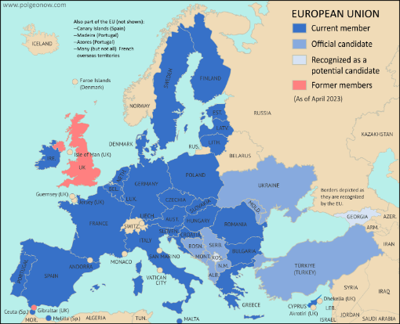
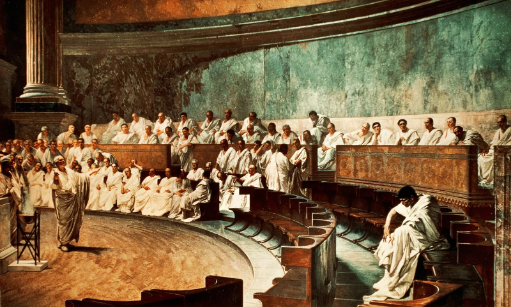

The Roman Empire vs The European Union

The Roman Empire

The European Union
The European Union is a modern 'club' of countries in Europe. EU countries agree to cooperate together on laws, the economy and other political issues. In order to join, a country must meet a bunch of requirements, including being within the continet of Europe.
The Roman Republic

The Romans created the system of government called the republic which is now very popular across the world.
The word republic comes from the latin phrase res publica meaning "of the people".
During the Republican period in Rome, the Empire did not have a king or emperor. Instead the romans chose two leaders at once called consuls. Think about consuls like being presidents, instead of having one, they had two at the same time.
Sometimes having two leaders at once became difficult and so some consuls shared power by passing back and forth the symbolic "fasces" axe every day. Only the consul who was 'holding the fasces' could actually lead. This sometimes led to trouble during battles where each consul would use a different strategy on their day, causing confusion.
Roman legends say that Rome was founded in 509 B.C.E. Archaeologists agree with a date around 600 B.C.E.
Beyond the consuls, the Romans were led by the Senate a body of old men elected from the city's most powerful families.
Its important to remember that while the Romans did have elections they were not elections of all citizens equally like our elections. Instead the Romans maintained a very complicated class system where the most powerful and wealthiest families, called the equites ruled over the rest of the Roman citizens, called the plebians. In some elections only families who were part of a "clan" could vote, meaning only equites.